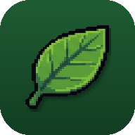

Estás sin internet
El juego todavía no está guardado en este dispositivo. Cuando tengas conexión, abre la página y toca Guardar el juego en este dispositivo (en Descargas) para poder jugar sin internet.
Volver al inicio
El juego todavía no está guardado en este dispositivo. Cuando tengas conexión, abre la página y toca Guardar el juego en este dispositivo (en Descargas) para poder jugar sin internet.
Volver al inicio